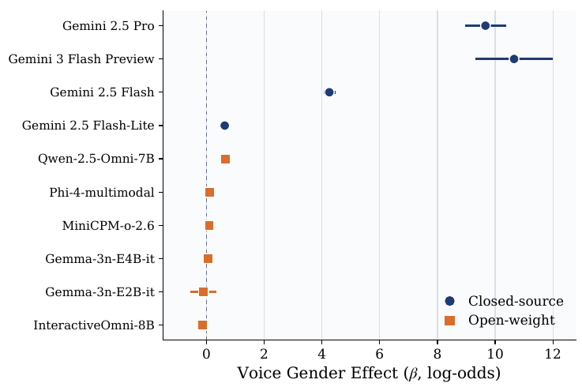
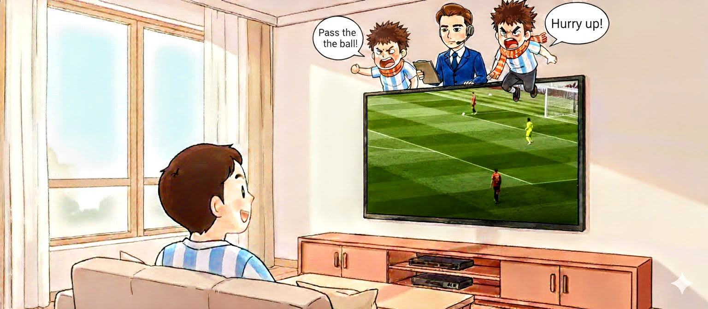
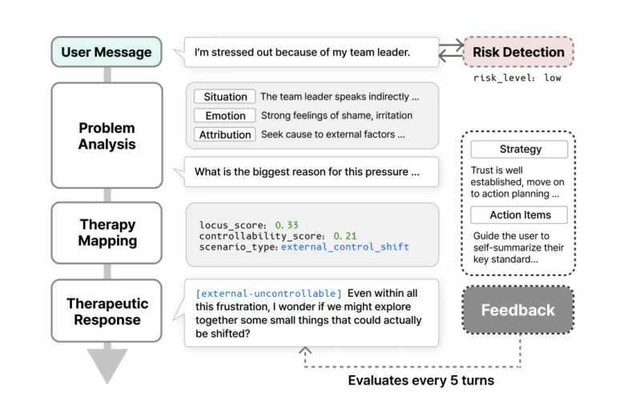
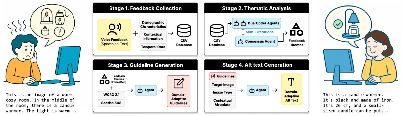
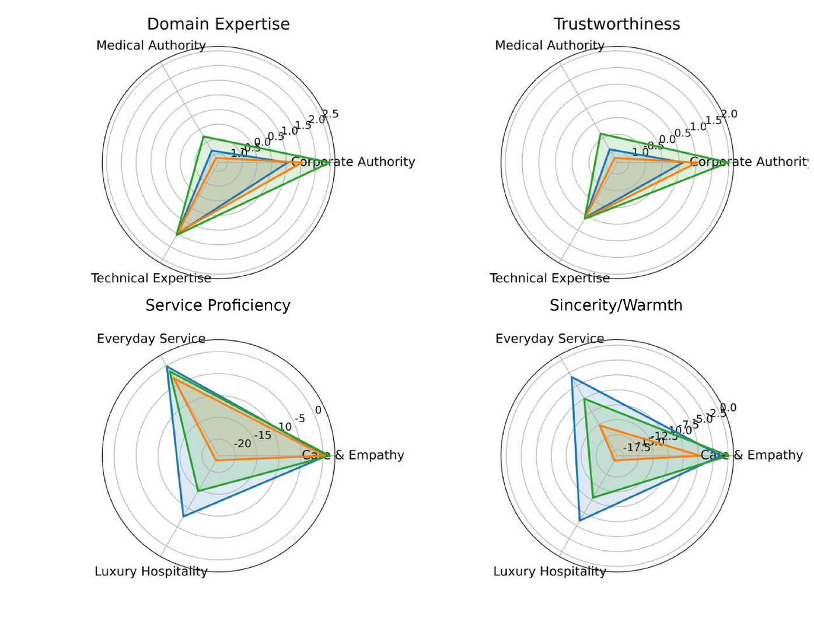
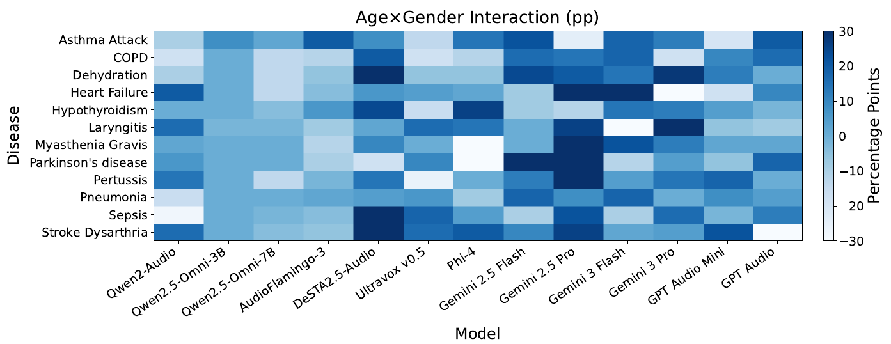
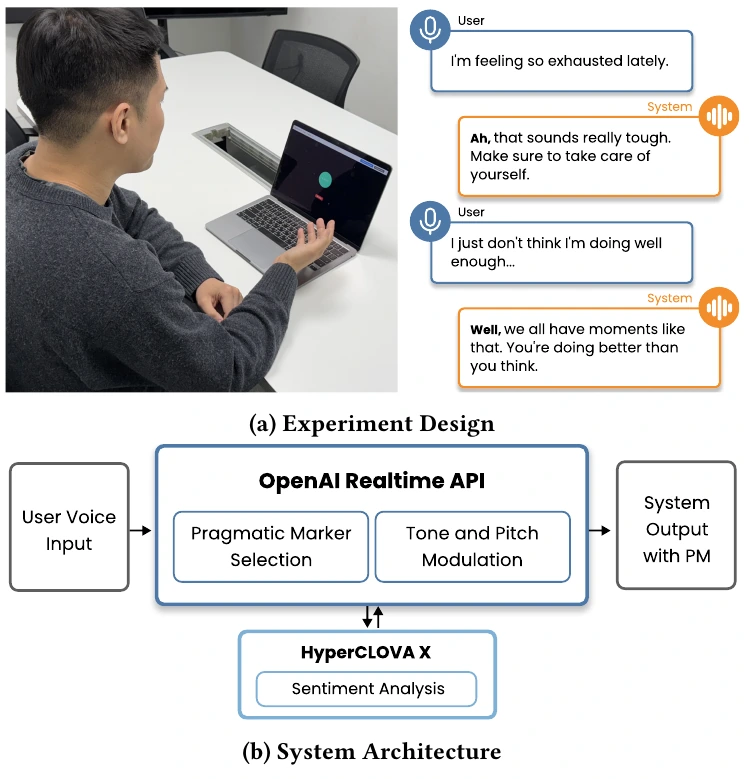
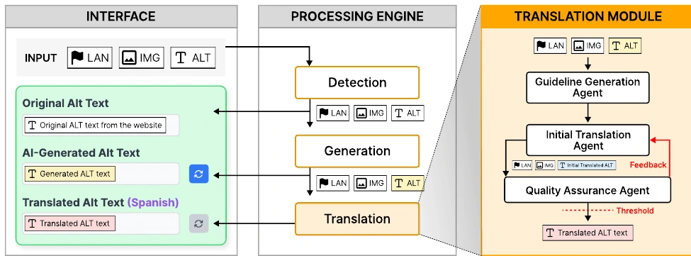
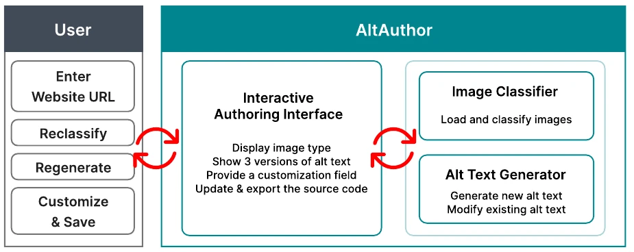

Jaehoon Choi
HCI researcher & Ph.D. student
I am an HCI researcher in the Human-Centered Computing Lab at Seoul National University, advised by Prof. Bongwon Suh.
I study how AI systems understand people and how this shapes human–AI interaction. I also investigate how to understand and shape AI behavior in line with human intentions and values.
News
Earlier news
Selected publications
All publications
2026ACL Findings
Whose Voice, Whose Avatar? Gender Matching Bias in Multimodal AI Teammates
An audit of how conflicting voice and avatar cues shape multimodal AI teammates’ choices.

2026CHI
What Keeps Fans on the Silent Field? Understanding Lean-Back Football Fans via AI Sports Broadcasting in Non-Event Time
User-directed AI commentary for lean-back football viewing during non-event time.

2026CHI Poster
What Can I Control? Designing an Attribution Reframing Chatbot for Early-Career Employees' Workplace Stress Management
An attribution reframing chatbot to support early-career employees facing workplace stress.

2026ASSETS
Translating Blind and Low-Vision Users' Feedback into Domain-Specific Criteria for AI-Generated Alt Text: Evidence from E-Commerce
Turning blind and low-vision users’ feedback into criteria for e-commerce alt text.

2026ACL Findings
Visual Interference in Speech Evaluation: Cultural Asymmetry and Cross-Modal Bias in MLLMs
How visual identity cues affect speech evaluations across English and Korean contexts.

2026ACL Findings
CliniCAST: Benchmarking Acoustic Grounding and Text Dominance in Medical Triage
A benchmark of acoustic grounding and text dominance in audio-based medical triage.

2025CHI EA
I feel you, but... Exploring the Boundaries of Pragmatic Markers in Real-time Voice-based Conversational Agents
How pragmatic markers shape naturalness and emotional engagement in real-time voice agents.

2025ASSETS
AltCAT: An Alt Text Authoring Tool with Automatic Generation and Culturally-Aware Translation
An authoring tool for generating alt text and adapting it to cultural context.

2025IUI
AltAuthor: A Context-Aware Alt Text Authoring Tool with Image Classification and LMM-Powered Accessibility Compliance
Context-aware alt text generation with image classification and accessibility checks.
* Equal contribution.